GeoScience part 5
Lviv University
Geographic thinking
Overview
Geographic thinking: the collected knowledge geographers have about why geographic information deserves special care and attention, especially when used in computations.
Two useful traits of geographic data
Geographic data is ubiquitous. Everything has a location in space-time, and that location can be used directly to make better predictions or inferences.
Location gives you relations: these let us contextualise our data.
Geographic thinking
Tobler’s First Law
Near things are likely to be more related than distant things — both in space and in time.
— Waldo Tobler
If we learn from this contextual information appropriately, we may be able to build better models.
All models are wrong
All models are wrong, but some are useful — George Box (1976)
Simplification is necessary.
All maps are wrong
All maps are wrong, but some are useful — Keith Ord (2010)
Geographic thinking
Concepts
- data model — how we conceptually represent a geographical process
- data structure — how geographic data is represented in a computer
Data models
The population density puzzle
Maps of population density: count people inside an “enumeration area”, divide by the area. Density becomes a constant value over the whole unit.
But people are discrete: each of us exists at one specific point in space and time.
- At a sufficiently fine-grained scale (space and time), population density is zero almost everywhere!
- In a typical day, a person moves from home to work through several points in space-time.
- Shopping malls have few residents, yet a very high population density at specific times - drawn from elsewhere.
Data models
The three classic data models
- Objects — discrete entities that occupy a specific position in space and time
- Fields — continuous surfaces that could, in theory, be measured at any location in space and time
- Networks — a set of connections between objects, or between positions in a field
In the population example:
- an enumeration unit is an object; so is a person
- the field view: density as a smooth continuous surface
- the network view: the inter-related system of places whose densities arise from people moving around
Data models
Why the distinction matters — it changes what relations are appropriate
Objects — relationships modelled with simple distances. Near objects are “strongly related”, distant objects “weakly related”.
Networks — must account for topology, the structure of connections between nodes. We cannot assume every node is connected, and connections cannot be derived from the nodes alone. (Example: two subway stations)
Fields — measurements can occur anywhere, so models must account for hypothetical realizations in the unobserved space between measurement points.
Generative structure vs. measurement
How a geographical process actually operates (its “causal” or “generative” structure) can be different from how we are actually able to measure it.
Data structures
From models to bytes
Data models are abstractions of reality that let us focus on the aspects of a process we care about.
But most of data and geographical science is empirical — analysis and interpretation of measurements. Object / field / network models are still too abstract for that.
Data structures are digital representations that connect data models to computer implementations. They form the middle layer between conceptual models and technology.
- At best: they express the data model’s principles and what is technologically possible
- At worst: a bad match makes analysis awkward and forces conversion to another structure
Data structures
The relationship runs both ways
Once established, a technology or data structure can exert an important influence on how we see and model the world.
Example: desktop GIS in the 1990s–2000s made geographic information useful to a much wider audience, largely by standardizing the “geographic matrix” (Berry, 1964), which we now call a geotable.
Data structures
“Disabling technology”
Mark Gahegan (1999) proposed the concept of disabling technology: the technological systems we use may affect the structure of our thinking.
The eyeglasses metaphor: technology is a pair of eyeglasses, data models are the “instructions” to build lenses.
If all we use to look at the world is the one pair we already have, we miss all the other ways of looking at the world that arise if we built lenses differently.
(And even healthy eyes with perfect vision contain optical imperfections in their lenses!)
Three standard data structures
What should the data scientist care about?
| Data model | Data structure | Python |
|---|---|---|
| Objects | Geographic tables | geopandas.GeoDataFrame |
| Fields | Surfaces / cubes | xarray.DataArray |
| Networks | Spatial graphs | networkx / libpysal W |
Each serves as a technological mirror for one of the conceptual models.
Geographic tables
Objects \(\rightarrow\) rows
Tables are two-dimensional structures of rows and columns:
- each row = an independent object
- each column = an attribute (feature) of those objects
- one column stores the geometry
The tabular structure fits the object model well: it clearly partitions space into discrete entities and assigns a geometry to each.
Crucially, geographic tables seamlessly combine geographic and non-geographic information — geography becomes simply “one more attribute”.
Geographic tables
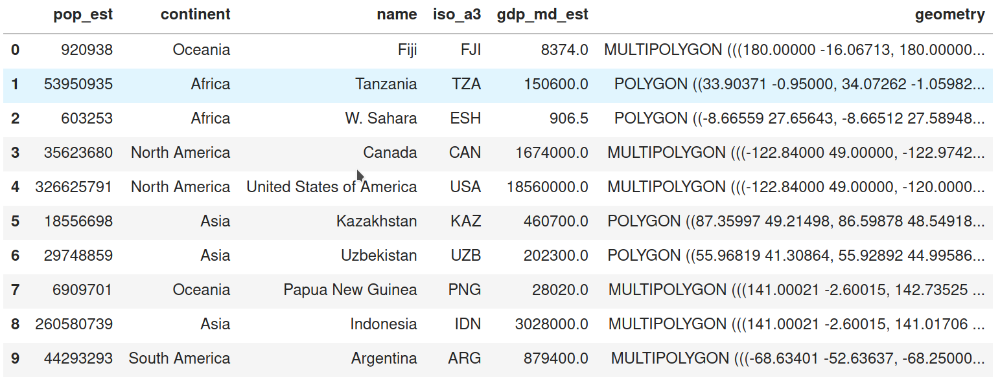
A geographic table: one row represents a country, with a distinct population, gross domestic product, and geometry.
Surfaces
Fields \(\rightarrow\) grids
For a field, there is (in theory) an infinite set of locations at which it may be measured. In practice, fields are measured at a finite set of locations.
Surfaces are recorded and stored in uniform grids — arrays whose dimensions are closely linked to the geographic extent they represent.
Unlike geographic tables, the arrays used in a surface use both rows and columns to signify location, and cell values to store information about that location.
Example: air pollution - each row is a latitude, each column a longitude.
Surfaces
Cubes and volumes
To represent more than one phenomenon (air pollution and elevation), or the same phenomenon at different points in time, we need several connected arrays.
These multi-dimensional arrays are sometimes called data cubes or volumes.
An emerging standard in Python to represent surfaces and cubes is provided by the xarray library.
Surfaces

A data cube with a single level, or “band”, with ~5500 rows (lines of longitude) and ~3500 columns (lines of latitude).
Spatial graphs
Relationships mediated through space
Spatial graphs capture relationships between objects that are mediated through space — geographic networks, a data structure to store topologies.
Whichever rules we follow to define spatial relationships, spatial graphs encode them into a data structure that supports analytics.
Techniques that rely on these topologies span:
- exploratory statistics of spatial autocorrelation
- regionalization
- spatial econometrics
Spatial graphs
One structure, many names
Several fields in computer science and mathematics came up with their own terminology for similar structures:
- spatial weights matrices
- adjacency matrices
- geo-graphs
- spatial networks
We are thinking of very similar fundamental structures deployed in different contexts.
We will use this terms: networkX graph objects, and the spatial weights objects in pysal, which rely on sparse adjacency matrices from scipy.
Spatial graphs
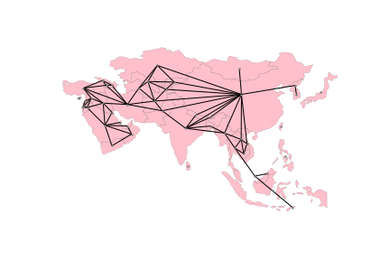
A network representing adjacency relationships between countries in Asia.
Spatial graphs
Graph or table? Streets and rivers
The streets of a city, or the interconnected rivers in a catchment area, are usually called networks — but often what is recorded is really a collection of objects in a geographic table.
- Interested in the exact shape, length and location of each segment? → a collection of independent lines/polygons that happen to touch at their ends \(\rightarrow\) geographic table
- Interested in who is connected to whom, and how individual connections comprise a broader interconnected system? \(\rightarrow\) spatial graph
The right link between data model and data structure depends not only on the phenomenon, but on our analytical goal.
Conceptual \(\leftrightarrow\) computational
The traditional (“desktop”) view
The main conceptual mapping is inherited from advances made in computer graphics:
- fields \(\rightarrow\) rasters
- objects \(\rightarrow\) vector-based tables
- networks \(\rightarrow\) no first-class structure; computed on the fly
This separation stems from implementation decisions in one of the first commercially successful GIS: ESRI’s ARC/INFO, a command-line precursor to QGIS and ArcGIS.
Some argue this association is fundamental to geographic representation and cannot be transcended.
This categorization is breaking up
1. Statistical learning translates between representations
The rise of machine learning has produced extremely efficient “black box” prediction algorithms.
Change of support problems - moving data from one geographical data structure to another - are wholly focused on accuracy; the interpretation of a change-of-support algorithm is rarely of substantive interest.
So machine learning has made it much easier to move between data structures.
\(\rightarrow\) The “costs” of moving between data structures have been lowered, reducing the importance of picking the “right” representation from the outset.
This categorization is breaking up
2. The search for a “fundamental” scale
Largely grown out of corporate data science, where transferring all geographic data to a single underlying representation benefits storage, computation and visualization:
- Uber’s H3 — “Hierarchical Hexagonal Geospatial Index”
- Google’s S2 “Earth cube”
- WorldPop — population as worldwide rasters at varying resolutions
WorldPop shifts population from an object-based representation (census units + counts) to a continuous field over which counts can be presented.
Spatial data in Python
Spatial data
Plan
Three fundamental structures
- geographic tables
- surfaces
- spatial graphs
Hybrid data structures:
- surfaces as tables
- tables as surfaces
- networks as graphs and tables
Spatial data
Geographic tables
The structure
A geographic table is like a tab in a spreadsheet where one column records geometric information.
- one geographic object = one row
- each column records an attribute of the object
- a special column records the geometry
Systems using this structure add geography to a relational database: PostgreSQL (PostGIS), sqlite (spatialite). Data science languages have their own:
- R
sf - Julia
GeoTables.jl - Python
geopandas.
Geographic tables
Terminology matters
- a feature = one measured trait pertaining to an observation: a column
- a sample = one set of measurements: a row
Historically, geographic information scientists used “feature” to mean an individual observation (an entity on a map), and “attribute” for its characteristics. Elsewhere a feature may be a “variable”, a sample a “record”.
Geographic tables
Reading a file
| ADMIN | geometry | |
|---|---|---|
| 0 | Indonesia | MULTIPOLYGON (((13102705.696 463877.598, 13102... |
| 1 | Malaysia | MULTIPOLYGON (((13102705.696 463877.598, 13101... |
| 2 | Chile | MULTIPOLYGON (((-7737827.685 -1979875.5, -7737... |
| 3 | Bolivia | POLYGON ((-7737827.685 -1979875.5, -7737828.21... |
| 4 | Peru | MULTIPOLYGON (((-7737827.685 -1979875.5, -7752... |
Each row is a single country, with two features: the administrative name (ADMIN, a Python str) and the country boundary (geometry).
Geographic tables
Geographic tables
Changing the geometric representation
Changing geometry must be done carefully. To represent each country by its centroid — the point minimizing average distance from all points on the boundary:
| ADMIN | geometry | centroid | |
|---|---|---|---|
| 0 | Indonesia | MULTIPOLYGON (((13102705.696 463877.598, 13102... | POINT (13055431.81 -248921.141) |
| 1 | Malaysia | MULTIPOLYGON (((13102705.696 463877.598, 13101... | POINT (12211696.493 422897.505) |
| 2 | Chile | MULTIPOLYGON (((-7737827.685 -1979875.5, -7737... | POINT (-7959811.948 -4915458.802) |
Despite starting with POINT, centroid is not yet the active geometry. Switch with set_geometry().
Geographic tables
Two representations of the same samples
Geographic tables
Simple features (OGC, ISO 19125-1)
The Open Geospatial Consortium defined “abstract” types that can define any kind of geometry:
Point— a zero-dimensional location with an x and y coordinateLineString— a path composed of more than onePointPolygon— a surface with at least oneLineStringthat starts and stops at the same coordinate
All of these also have Multi variants, indicating a collection of multiple geometries of the same type.
There is no formal requirement that a geographic table has geometries all of the same type.
Geographic tables
Geographic tables
Geographic tables
Points hiding in a plain table
Points have no dimension — only a pair of coordinates. So they can be stored in a non-geographic table, one column per coordinate:
| user_id | longitude | latitude | date_taken | photo/video_page_url | x | y | |
|---|---|---|---|---|---|---|---|
| 0 | 10727420@N00 | 139.700499 | 35.674000 | 2010-04-09 17:26:25.0 | http://www.flickr.com/photos/10727420@N00/4545... | 1.555139e+07 | 4.255856e+06 |
| 1 | 8819274@N04 | 139.766521 | 35.709095 | 2007-02-10 16:08:40.0 | http://www.flickr.com/photos/8819274@N04/26503... | 1.555874e+07 | 4.260667e+06 |
| 2 | 62068690@N00 | 139.765632 | 35.694482 | 2008-12-21 15:45:31.0 | http://www.flickr.com/photos/62068690@N00/3125... | 1.555864e+07 | 4.258664e+06 |
No geometry column in sight.
Geographic tables
Two steps to a GeoDataFrame
- Turn the raw coordinates into geometries:
- Build the
GeoDataFrame:
Surfaces
Grids of samples
In theory a field is continuous with infinitely many locations. In reality it is measured at a finite sample of locations that — to provide a sense of continuity — are uniformly structured across space.
A grid can be thought of as a table with rows and columns, but both are directly tied to a geographic location.
Sharp contrast with geographic tables, where geography is confined to a single column.
Reading a GeoTIFF
A global population dataset extract for São Paulo, Brazil — population counts in equally-sized cells covering the Earth. GeoTIFF = TIF plus geographic information.
xarray.core.dataarray.DataArrayxarray works with multi-dimensional labeled arrays: an arbitrary number of dimensions, each “tracked” by an index. In xarray these indices are coordinates.
Surfaces
What is a band for?
Here band has a single value (1) and is not very useful. But it is easy to imagine contexts where a third dimension matters:
- an optical colour image has three bands: red, green, blue
- more powerful sensors add near infrared (NIR) or radio bands
- a surface measured over time will have a band for each point in time
A geographic surface thus has two dimensions recording location (x, y) and at least one band.
Surfaces
Metadata: attrs
Surfaces
Surfaces
Negative population?
Spatial graphs
Connections through space
Spatial graphs store connections between objects through space, deriving from:
- geographical topology (e.g. contiguity)
- distance
- more sophisticated dimensions: interaction flows (commuting, trade, communication)
They differ from tables and surfaces in two ways:
- In most cases they do not record measurements about a phenomenon — they store relationships
- Because of that relational nature, the data is unstructured: one sample may have one link, another several
Spatial graphs
Nodes and edges
A graph is composed of nodes linked together by edges.
In a spatial network:
- nodes may represent geographical places, so they have a location
- edges may represent geographical paths between those places
Networks require both nodes and edges to analyse their structure.
There are several Python data structures for spatial graphs, each optimized for a different context. For statistical methods, the most common are spatial weights matrices.
Spatial graphs
Fetching a street network with osmnx
This sends a query to the OpenStreetMap server and requires internet connectivity. A cached version is available:
networkx.classes.multidigraph.MultiDiGraphA MultiDiGraph from networkx.
Surfaces as tables
The costs
Each cell of the surface/cube becomes a row in a table.
- we lose the space-time reference that comes “for free” from the position of values inside the array — or must rebuild it manually with auxiliary objects
- operating on this format is less efficient than bespoke algorithms built around surface structures
- conceptually: treating pixels as independent realizations of a process we know is continuous can be computationally inefficient and statistically flawed
Surfaces as tables
The benefits
Sometimes we don’t need location — overall descriptive statistics, or an analysis that is entirely atomic (operates on each sample in isolation)
We recast specialized spatial data into the most common data structure available — the one for which a huge amount of commodity technology exists:
- “big data” technologies (distributed systems) are far more common, robust and tested for tabular data
- whole analytic toolboxes are built around tables:
scikit-learn, most of the PySAL family
Surfaces as tables
One pixel at a time
Going from surface to table = traversing from xarray to pandas:
band y x
1 -2822125.0 -4481875.0 -200.0
-4481625.0 -200.0
-4481375.0 -200.0
-4481125.0 -200.0
-4480875.0 -200.0
dtype: float32The result is a pandas.Series indexed on each dimension of the original DataArray.
Everything we know about pandas applies
| band | y | x | Value | |
|---|---|---|---|---|
| 0 | 1 | -2822125.0 | -4481875.0 | -200.0 |
| 1 | 1 | -2822125.0 | -4481625.0 | -200.0 |
| 2 | 1 | -2822125.0 | -4481375.0 | -200.0 |
Finding cells with more than 1,000 people is just a query():
Back to geometries
The table has no geometries — only rows representing pixels. A small function turns a row plus the surface resolution into a polygon:
def row2cell(row, res_xy):
res_x, res_y = res_xy # Extract resolution for each dimension
# XY Coordinates are centered on the pixel
minX = row["x"] - (res_x / 2)
maxX = row["x"] + (res_x / 2)
minY = row["y"] + (res_y / 2)
maxY = row["y"] - (res_y / 2)
poly = geometry.box(minX, minY, maxX, maxY)
return poly
row2cell(t_surface.loc[0, :], surface.rio.resolution())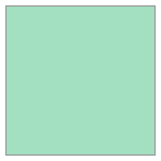
Surfaces as tables
A benefit: no need for a filled surface
We can record pixels only where we have data:
Pixels to polygons
Zonal statistics
The second route: move surfaces into geographic tables by aggregating pixels into pre-specified geometries.
Example: the average altitude of each San Diego neighbourhood, from a digital elevation model (DEM).
Pixels to polygons
Pixels to polygons
Clipping one polygon
rioxarray can clip the part of the raster falling within a geometry, then we summarize that sub-raster. Start with the largest tract:
<xarray.DataArray ()> Size: 4B
array(585.1138, dtype=float32)
Coordinates:
band int64 8B 1
spatial_ref int64 8B 0
Attributes:
AREA_OR_POINT: Area
scale_factor: 1.0
add_offset: 0.0
_FillValue: -32768- 585.1
array(585.1138, dtype=float32)
- band()int641
array(1)
- spatial_ref()int640
- crs_wkt :
- GEOGCS["WGS 84",DATUM["WGS_1984",SPHEROID["WGS 84",6378137,298.257223563,AUTHORITY["EPSG","7030"]],AUTHORITY["EPSG","6326"]],PRIMEM["Greenwich",0,AUTHORITY["EPSG","8901"]],UNIT["degree",0.0174532925199433,AUTHORITY["EPSG","9122"]],AXIS["Latitude",NORTH],AXIS["Longitude",EAST],AUTHORITY["EPSG","4326"]]
- semi_major_axis :
- 6378137.0
- semi_minor_axis :
- 6356752.314245179
- inverse_flattening :
- 298.257223563
- reference_ellipsoid_name :
- WGS 84
- longitude_of_prime_meridian :
- 0.0
- prime_meridian_name :
- Greenwich
- geographic_crs_name :
- WGS 84
- horizontal_datum_name :
- World Geodetic System 1984
- grid_mapping_name :
- latitude_longitude
- spatial_ref :
- GEOGCS["WGS 84",DATUM["WGS_1984",SPHEROID["WGS 84",6378137,298.257223563,AUTHORITY["EPSG","7030"]],AUTHORITY["EPSG","6326"]],PRIMEM["Greenwich",0,AUTHORITY["EPSG","8901"]],UNIT["degree",0.0174532925199433,AUTHORITY["EPSG","9122"]],AXIS["Latitude",NORTH],AXIS["Longitude",EAST],AUTHORITY["EPSG","4326"]]
- GeoTransform :
- -116.61847222222222 0.0002777777777777799 0.0 33.42902777777778 0.0 -0.0002777777777777784
array(0)
- AREA_OR_POINT :
- Area
- scale_factor :
- 1.0
- add_offset :
- 0.0
- _FillValue :
- -32768
Pixels to polygons
Pixels to polygons
Scaling up, approach 1: apply
def get_mean_elevation(row, dem):
# Extract geometry object
geom = row["geometry"].__geo_interface__
# Clip the surface to extract pixels within `geom`
section = dem.rio.clip([geom], crs=sd_tracts.crs)
# Calculate mean elevation
elevation = float(section.where(section > 0).mean())
return elevation
sd_tracts.head().apply(get_mean_elevation, dem=dem, axis=1)0 7.144268
1 35.648491
2 53.711388
3 91.358780
4 187.311966
dtype: float64Plays well with xarray, scales to parallel/distributed form with dask, extends with arbitrary Python functions — but slow on big data.
Pixels to polygons
Approach 2: rasterstats
A purpose-built library for zonal statistics. Generally faster, but harder to extend or adapt.
| min | max | mean | count | |
|---|---|---|---|---|
| 0 | -12.0 | 18.0 | 3.538397 | 3594 |
| 1 | -2.0 | 94.0 | 35.616395 | 5709 |
| 2 | -5.0 | 121.0 | 48.742630 | 10922 |
| 3 | 31.0 | 149.0 | 91.358777 | 4415 |
| 4 | -32.0 | 965.0 | 184.284941 | 701973 |
Pixels to polygons
Surface -> geography -> choropleth
Visualize:
f, axs = plt.subplots(1, 3, figsize=(11, 4))
dem.where( # Keep only pixels above sea level
dem > 0
).rio.reproject( # Reproject to CRS of tracts
sd_tracts.crs
).plot.imshow(
ax=axs[0], add_colorbar=False
)
sd_tracts.plot(ax=axs[1])
sd_tracts.assign(elevation=elevations2["mean"]).plot(
"elevation", ax=axs[2]
);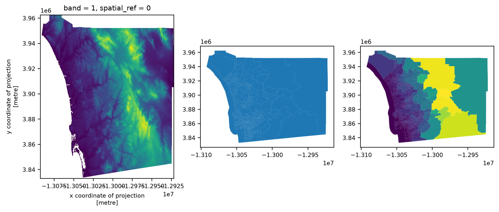
Tables as surfaces
When there are too many points
Less controversial than the reverse. Useful when we care about the overall distribution of objects (usually points) and there are so many that:
- it is technically more efficient to represent them as a surface
- conceptually it is easier to think of the points as uneven measurements from a continuous field
This is the reverse of zonal statistics: instead of aggregating cells into objects, we aggregate objects into cells. Both reduce information to make the data more manageable.
Tables as surfaces
Tables as surfaces
datashader
Two steps. First, set up the grid (canvas) into which to aggregate points:
Then “transfer” the points into the grid:
xarray.core.dataarray.DataArrayThe result is a standard DataArray.
Tables as surfaces
Networks as graphs and tables
Flipping between representations
Spatial analytics may use a graph to record the topology of a table of polygons; transport applications may treat the street network as a set of objects — lines.
Sometimes we want to operate on each component independently: map streets, calculate segment lengths, draw buffers around each intersection.
These operations do not require topological information, are standard for geo-tables, and are irrelevant to the graph structure.
Networks as graphs and tables
Graph \(\rightarrow\) two geo-tables
| y | x | street_count | highway | geometry | |
|---|---|---|---|---|---|
| osmid | |||||
| 886196069 | 35.670087 | 139.694333 | 3 | NaN | POINT (139.69433 35.67009) |
| 886196073 | 35.669725 | 139.699508 | 3 | NaN | POINT (139.69951 35.66972) |
| 886196100 | 35.669442 | 139.699708 | 3 | NaN | POINT (139.69971 35.66944) |
<class 'geopandas.geodataframe.GeoDataFrame'>
MultiIndex: 287 entries, (np.int64(886196069), np.int64(1520546857), np.int64(0)) to (np.int64(7684088896), np.int64(3010293702), np.int64(0))
Data columns (total 8 columns):
# Column Non-Null Count Dtype
--- ------ -------------- -----
0 osmid 287 non-null object
1 highway 287 non-null object
2 oneway 287 non-null bool
3 length 287 non-null float64
4 geometry 287 non-null geometry
5 bridge 8 non-null str
6 name 9 non-null str
7 access 2 non-null str
dtypes: bool(1), float64(1), geometry(1), object(2), str(3)
memory usage: 19.1+ KBAnd back again, with the sister method:
Spatial data
Take-aways
The Python ecosystem is vast, deep and ever-changing, and it is easy to create your own representations.
But by focusing on shared representations and the interfaces between them, you can conduct any analysis you need.
Bespoke representations might make your analysis more efficient — but they can also isolate it from other developers and render useful tools inoperable.
A solid understanding of
GeoDataFrame,DataArrayandGraphwill support nearly any analysis you need to conduct.
Spatial Weights
Spatial weights
Overview
Spatial weights are one way to represent graphs in geographic data science and spatial statistics.
- They represent geographic relationships between the observational units in a spatially referenced dataset, connecting objects in a geographic table using the spatial relationships between them.
- By expressing geographical proximity or connectedness, spatial weights are the main mechanism through which spatial relationships are brought to bear in the analysis.
Spatial weights
From questions to topology
Spatial weights express our knowledge about spatial relationships:
What neighbourhoods am I surrounded by? How many gas stations are within 5 miles of my stalled car?
These target the spatial configuration of a specific target and its geographically connected relevant sites.
For statistical analysis we usually need these relationships between all pairs of observations — a topology, a mathematical structure expressing connectivity, letting us embed all observations in space together.
Spatial weights
Plan
- contiguity / adjacency weights
- distance-based weights
- hybrid weights
- block weights and set operations
- a use case: boundary detection
Contiguity weights
A three-by-three grid
A contiguous pair of spatial objects share a common border. Simple at first glance — in practice, more complicated.
# Get points in a grid
l = numpy.arange(3)
xs, ys = numpy.meshgrid(l, l)
# Set up store
polys = []
# Generate polygons
for x, y in zip(xs.flatten(), ys.flatten()):
poly = Polygon([(x, y), (x + 1, y), (x + 1, y + 1), (x, y + 1)])
polys.append(poly)
# Convert to GeoSeries
polys = geopandas.GeoSeries(polys)
gdf = geopandas.GeoDataFrame(
{
"geometry": polys,
"id": ["P-%s" % str(i).zfill(2) for i in range(len(polys))],
}
)Code
def label_grid(ax):
for x, y, t in zip(
[p.centroid.x - 0.25 for p in polys],
[p.centroid.y - 0.25 for p in polys],
[i for i in gdf["id"]],
):
plt.text(
x,
y,
t,
verticalalignment="center",
horizontalalignment="center",
)
ax = gdf.plot(facecolor="w", edgecolor="k")
label_grid(ax)
ax.set_axis_off()
plt.show()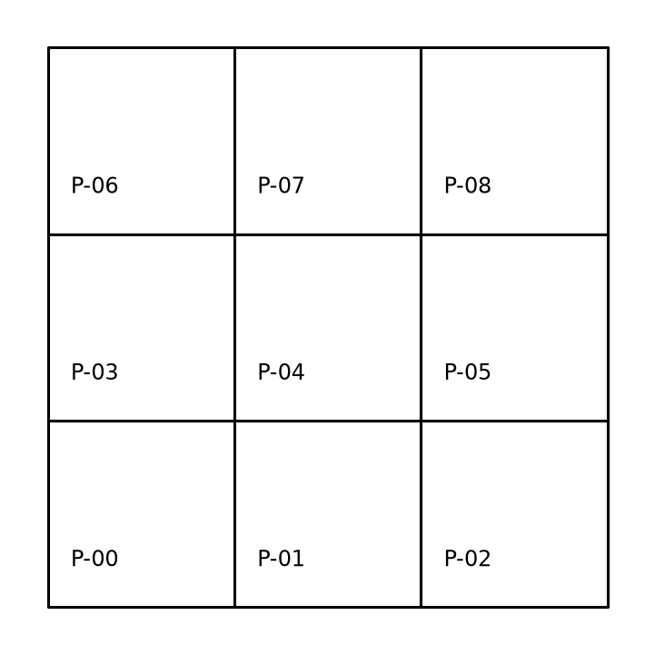
Contiguity weights
An analogy to chess
Rook contiguity requires the pair of polygons to share an edge.
- polygon \(0\) is a Rook neighbour of \(1\) and \(3\)
- polygon \(1\) is a Rook neighbour of \(0\), \(2\) and \(4\)
Queen contiguity requires the pair to share one or more vertices — more inclusive.
(A third, less used: Bishop contiguity — share a vertex but not an edge.)
Contiguity weights
Code
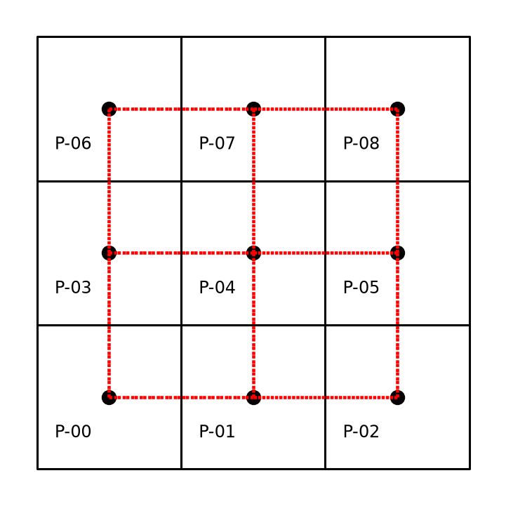
Grid cells connected by a red line are neighbours under the Rook rule.
Contiguity weights
The neighbors attribute
Contiguity weights
Sparse vs. dense
Knowing that the neighbours of polygon \(0\) are \(1\) and \(3\) implies \(2, 4, 5, 6, 7, 8\) are not Rook neighbours. There is no reason to store non-neighbour information → significant memory savings.
But the fully dense matrix can be produced if needed:
| 0 | 1 | 2 | 3 | 4 | 5 | 6 | 7 | 8 | |
|---|---|---|---|---|---|---|---|---|---|
| 0 | 0 | 1 | 0 | 1 | 0 | 0 | 0 | 0 | 0 |
| 1 | 1 | 0 | 1 | 0 | 1 | 0 | 0 | 0 | 0 |
| 2 | 0 | 1 | 0 | 0 | 0 | 1 | 0 | 0 | 0 |
| 3 | 1 | 0 | 0 | 0 | 1 | 0 | 1 | 0 | 0 |
| 4 | 0 | 1 | 0 | 1 | 0 | 1 | 0 | 1 | 0 |
| 5 | 0 | 0 | 1 | 0 | 1 | 0 | 0 | 0 | 1 |
| 6 | 0 | 0 | 0 | 1 | 0 | 0 | 0 | 1 | 0 |
| 7 | 0 | 0 | 0 | 0 | 1 | 0 | 1 | 0 | 1 |
| 8 | 0 | 0 | 0 | 0 | 0 | 1 | 0 | 1 | 0 |
Contiguity weights
Geography has more than one dimension
Compared to representations of relationships in time:
- spatial relationships are bi-directional; temporal relationships are unidirectional
- the ordering of observations in the weights matrix is arbitrary
The first row is not first for a mathematical reason — it just happens to be first in the input. Any arbitrary rule would give a different-looking matrix, but the graph would be isomorphic and retain the mapping of relationships.
Contiguity weights
A familiar object
Spatial weights matrices may look familiar to those acquainted with social networks and graph theory, where adjacency matrices express connectivity between nodes.
A spatial weights matrix is a graph adjacency matrix where each observation is a node and the weight is the edge weight. Sometimes called the dual graph of the input geographic data.
geographic data science can borrow from the rich graph theory literature
but spatial data has distinguishing characteristics that require specialized procedures
Contiguity weights
Queen
Polygons \(0\) and \(5\) are not Rook neighbours, yet they do share a common border — via a common vertex rather than a shared edge.
{0: [1, 3, 4],
1: [0, 2, 3, 4, 5],
2: [1, 4, 5],
3: [0, 1, 4, 6, 7],
4: [0, 1, 2, 3, 5, 6, 7, 8],
5: [1, 2, 4, 7, 8],
6: [3, 4, 7],
7: [3, 4, 5, 6, 8],
8: [4, 5, 7]}The neighbours of \(0\) now include \(4\) along with \(1\) and \(3\).
Code
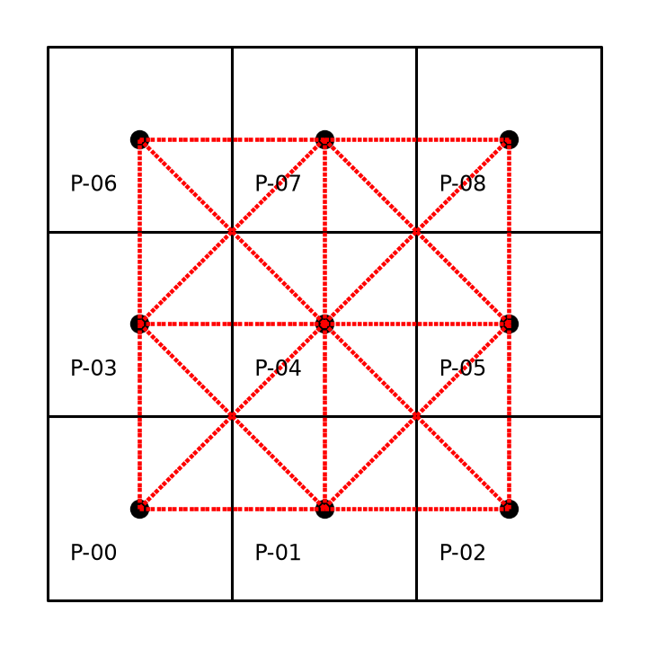
Grid cells connected by a red line are neighbours under Queen contiguity.
Contiguity weights
The weights attribute
While neighbors encodes who, weights encodes how strongly:
{0: [1.0, 1.0, 1.0],
1: [1.0, 1.0, 1.0, 1.0, 1.0],
2: [1.0, 1.0, 1.0],
3: [1.0, 1.0, 1.0, 1.0, 1.0],
4: [1.0, 1.0, 1.0, 1.0, 1.0, 1.0, 1.0, 1.0],
5: [1.0, 1.0, 1.0, 1.0, 1.0],
6: [1.0, 1.0, 1.0],
7: [1.0, 1.0, 1.0, 1.0, 1.0],
8: [1.0, 1.0, 1.0]}For contiguity weights, observations are either “linked” or “not linked” — the matrix is binary.
weights and neighbors are aligned: the first neighbour in neighbors has the first weight in weights. This matters for distance-based weights, where the values differ.
Contiguity weights
Cardinalities
The number of neighbours for each observation:
[(np.int64(3), np.int64(4)),
(np.int64(4), np.int64(0)),
(np.int64(5), np.int64(4)),
(np.int64(6), np.int64(0)),
(np.int64(7), np.int64(0)),
(np.int64(8), np.int64(1))]Four corner observations with 3 neighbours, four edge observations with 5, one central observation with 8. No observations with 4, 6 or 7.
Joins and density
Weights from real geographic tables
San Diego census tracts
Most spatial data formats (e.g. shapefiles) are non-topological: polygons are stored as a collection of vertices defining the boundary. No neighbour information is encoded — we must construct it.
Under the hood, pysal uses efficient spatial indexing structures.
628
1.018296888311899A larger number of spatial units, and much sparser weights than the toy grid.
Code
f, axs = plt.subplots(1, 2, figsize=(9, 4))
for i in range(2):
ax = san_diego_tracts.plot(
edgecolor="k", facecolor="w", ax=axs[i]
)
w_queen.plot(
san_diego_tracts,
ax=axs[i],
edge_kws=dict(color="r", linestyle=":", linewidth=1),
node_kws=dict(marker=""),
)
axs[i].set_axis_off()
axs[1].axis([-13040000, -13020000, 3850000, 3860000]);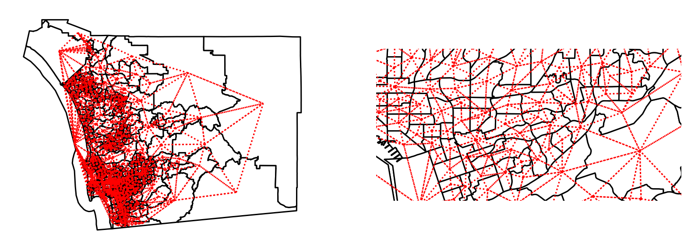
The Queen contiguity graph — whole region (left) and zoomed detail (right).
Weights from real geographic tables
Rook, for comparison
0.8722463385938578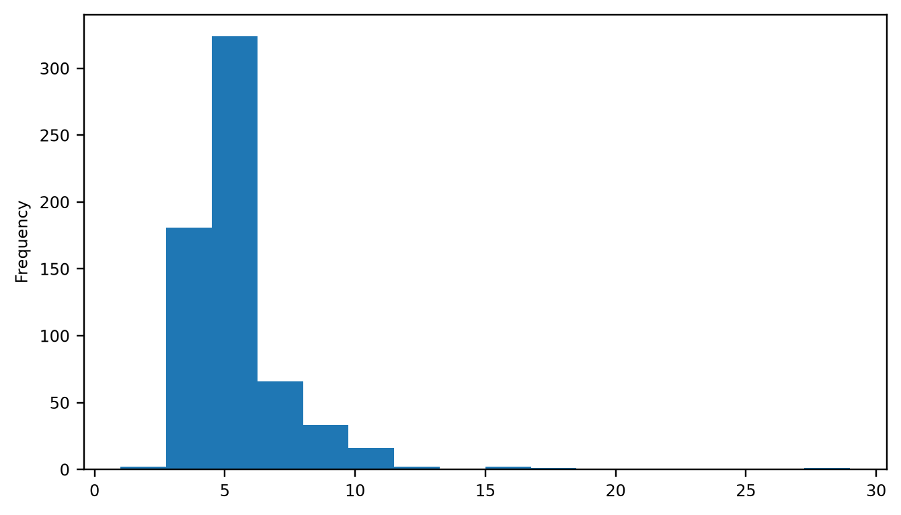
The histogram shifts downward: all Rook neighbours are Queen neighbours, but not all Queen neighbours are Rook neighbours.
Weights from surfaces
Blurring the boundary
The boundary between what gets stored as tables and what as surfaces is blurring, so analytics traditionally developed for tables are increasingly used on surfaces.
From version 2.4 onwards, pysal supports building spatial weights from xarray.DataArray objects:
97232Although the internals differ, once built the object is a sparse version of the same W.
Distance based weights
Neighbours as a function of distance
Instead of contiguity, define neighbour relations as a function of the distance separating observations.
This usually requires a matrix of distances between all pairs of observations, which is then provided to a kernel function that models proximity as a smooth function of distance.
pysal implements a family of distance functions. We start with nearest neighbour weights.
Distance based weights
The \(k\) closest observations
The neighbour set of an observation contains its nearest \(k\) observations, with \(k\) chosen by the user.
Since we deal with polygons, a representative point is needed — pysal uses inter-centroid distances.
No island problem — everyone has at least one neighbour, by construction.
Kernel weights
Continuously valued weights
The \(k\)-nearest neighbour rule assigns binary values. pysal also supports continuous weights, reflecting Tobler’s first law more directly: observations close to a unit get larger weights than distant ones.
Kernel weights are the most commonly used kind of distance weights. The weight between \(i\) and \(j\) is based on their distance, further modulated by a kernel function.
All pysal kernels share the property of distance decay, but decay at different rates.
Kernel weights
A computational note
Distance-based decay functions require more resources than contiguity or KNN weights.
Contiguity and KNN embed simple assumptions about how shapes relate in space; kernel functions relax several of those assumptions.
More flexibility, at the expense of computation.
Kernel weights
Two options: function and bandwidth
array([[1.0000001],
[1.0000001],
[1.0000001],
[1.0000001],
[1.0000001]])- the kernel function controls how distance is “modulated” into \(w_{ij}\)
- the bandwidth is the distance over which the kernel is applied; beyond it, weights are zero
Defaults: a triangular kernel, with bandwidth equal to the maximum knn=2 distance for all observations — a fixed bandwidth.
Kernel weights
Fixed is not always best
When the density of observations varies over the study region, the same threshold everywhere gives some regions a high density of neighbours and leaves others very sparsely connected.
An adaptive bandwidth — varying by observation — can be preferred. It is picked with a KNN rule: the bandwidth is chosen so that once the \(k\)-nearest observation is considered, all remaining observations have zero weight.
Adaptive bandwidths differ per observation
Kernel weights
Code
full_matrix, ids = w_adaptive.full()
f, ax = plt.subplots(
1, 2, figsize=(10, 5), subplot_kw=dict(aspect="equal")
)
sub_30.assign(weight_0=full_matrix[0]).plot(
"weight_0", cmap="plasma", ax=ax[0]
)
sub_30.assign(weight_18=full_matrix[17]).plot(
"weight_18", cmap="plasma", ax=ax[1]
)
sub_30.iloc[[0], :].centroid.plot(
ax=ax[0], marker="*", color="k", label="Focal Tract"
)
sub_30.iloc[[17], :].centroid.plot(
ax=ax[1], marker="*", color="k", label="Focal Tract"
)
ax[0].set_title("Kernel centered on first tract")
ax[1].set_title("Kernel centered on 18th tract")
[ax_.set_axis_off() for ax_ in ax]
[ax_.legend(loc="upper left") for ax_ in ax];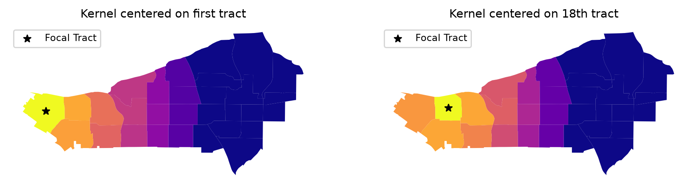
The kernel is strongly affected by the local structure of spatial proximity.
Kernel weights
The cost of explicit distance decay
Every pair of observations within the bandwidth is considered → increased memory requirements.
This may be at odds with the nature of the spatial interactions at hand, which often operate over a limited range. Expanding the neighbourhood set beyond it leads us to consider interactions that do not take place, or are inconsequential.
For both substantive and computational reasons, it often makes sense to keep impacts hyper-local.
Distance bands and hybrid weights
Draw a circle
Consider as neighbours every observation falling within a circle around each observation — in GIS terms, a buffer plus a point-in-polygon operation.
[1.0, 1.0, 1.0, 1.0, 1.0, 1.0, 1.0, 1.0]Inside the buffer → weight of one. Outside → zero.
A “censored” kernel
Distance bands and hybrid weights
Comparing polygon 4 (the centre of the grid)
Queen — eight neighbours, uniform weight of one:
Hybrid — modulated, giving less relevance to further observations (here, those sharing only a point):
Great circle distances
The Earth is not flat
Distance calculations should take the curvature of the Earth’s surface into account.
Best: transform coordinates into a projected reference system before computing weights.
If that is not possible or convenient, pysal offers an approximation for non-projected (longitude/latitude) systems.
Taking curvature into account
We need the radius of the Earth in a given metric; pysal provides it in miles and kilometres.
Distances are then expressed in the units used for the radius.
Ignoring curvature creates erroneous neighbour pairs
with curvature: [np.int64(3), np.int64(4), np.int64(5), np.int64(6)]
without curvature: [np.int64(4), np.int64(5), np.int64(6), np.int64(13)]The four correct nearest neighbours of observation 0 are 3, 4, 5 and 6.
But observation 13 is ever so slightly closer when computing straight-line distance instead of the distance that accounts for curvature.
Block weights
Membership defines the neighbourhood
Block weights connect every observation that belongs to the same category in a provided list.
- all members of a group are considered “near” one another \(\rightarrow\) weight of one for every pair in the group
- all non-members are disconnected from the group \(\rightarrow\) weight of zero
The resulting matrix looks like blocks of 1s stacked on the diagonal — hence the name.
Block weights
No spatial data required
Only the list of memberships is needed:
As a check — the first two tracts share a county, so they should be neighbours:
Block weights
An intermediate step
Block weights are useful as a building block in more involved analyses of “hybrid” spatial relationships.
Suppose a researcher wants to allow for Queen neighbours within counties, but not for tracts across counties.
That requires a combination of the Queen and block criteria — which pysal implements through set operations.
Set operations on weights
Combining existing matrices
So far we built weights matrices from a single neighbourhood rule. But sometimes a single rule is inapt, or guiding principles point to a combination of criteria.
pysal supports set theoretic operations on weights: union, intersection, difference, symmetric difference.
Two use cases follow:
- reconnecting disconnected observations (islands)
- blending block and contiguity structure
Editing disconnected observations
The island problem
An observation with no neighbours creates issues in analytics built on spatial weights, so it is good practice to amend the matrix before use.
For the sake of the example, assume tract 103 were an island (it is not):
The approach also applies outside islands — sometimes the process of interest requires manually editing the weights to capture connections we want.
Using the union of matrices
Not exactly the same
In principle this differs from the manual patch: the nearest observation might not have been a Rook neighbour, in which case the two matrices would differ.
A rare, but theoretically possible, situation.
Visualizing weight set operations
The 32 states of Mexico
mx = geopandas.read_file(f"{GDS}/mexico/mexicojoin.shp")
# Queen contiguity
mx_queen = weights.contiguity.Queen.from_dataframe(
mx, use_index=False
)
# K-NN with four nearest neighbors
mx_knn4 = weights.KNN.from_dataframe(mx, k=4)
# Block weights at the federal region level
mx_bw = weights.util.block_weights(mx["INEGI2"].values)
# Block + Queen: contiguous neighbors *across* regions
mx_union = weights.set_operations.w_union(mx_bw, mx_queen)Code
f, axs = plt.subplots(2, 2, figsize=(8, 8))
ax = axs[0, 0]
mx.plot(ax=ax)
mx_queen.plot(
mx,
edge_kws=dict(linewidth=1, color="orangered"),
node_kws=dict(marker="*"),
ax=ax,
)
ax.set_axis_off()
ax.set_title("Queen")
ax = axs[0, 1]
mx.plot(ax=ax)
mx_knn4.plot(
mx,
edge_kws=dict(linewidth=1, color="orangered"),
node_kws=dict(marker="*"),
ax=ax,
)
ax.set_axis_off()
ax.set_title("$K$-NN 4")
ax = axs[1, 0]
mx.plot(column="INEGI2", categorical=True, cmap="Pastel2", ax=ax)
mx_bw.plot(
mx,
edge_kws=dict(linewidth=1, color="orangered"),
node_kws=dict(marker="*"),
ax=ax,
)
ax.set_axis_off()
ax.set_title("Block weights")
ax = axs[1, 1]
mx.plot(column="INEGI2", categorical=True, cmap="Pastel2", ax=ax)
mx_union.plot(
mx,
edge_kws=dict(linewidth=1, color="orangered"),
node_kws=dict(marker="*"),
ax=ax,
)
ax.set_axis_off()
ax.set_title("Queen + Block")
f.tight_layout()
plt.show()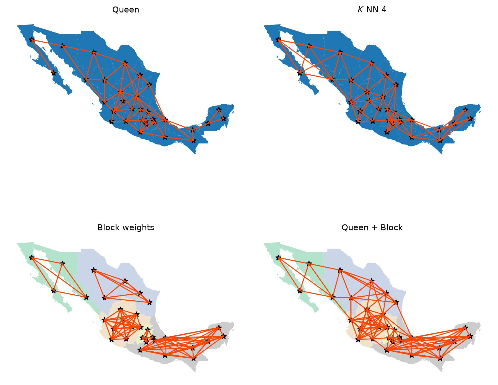
Visualizing weight set operations
Reading the four graphs
Queen vs. KNN — relatively similar, but KNN is sparser where irregular polygons are dense (Queen connects each to more than four) and denser in sparse areas with fewer, larger polygons (e.g. the northwest).
Queen vs. Block — the Block graph is visually denser in particular areas:
Connected components
- The Queen graph has a single connected component: for all pairs of states there is at least one path of edges connecting them.
- The Block graph has five connected components, one per region. Each is fully connected internally, with no edges between states of different blocks.
Certain spatial analytical techniques require a fully connected graph.
The Union graph offers the best of both: a single connected component, with very dense intra-regional linkages and thinner inter-regional ones.
Use case: boundary detection
Weights are useful in their own right
Spatial weights are not only inputs to other methods — they can be used to examine latent structures directly, or for descriptive analysis.
One clear use case in social data: characterizing latent data discontinuities — a border (or collection of borders) where a variable of interest changes abruptly.
These are used in models of inequality, and to adapt classic empirical outlier detection methods.
Below: one model-free way to identify empirical boundaries in your data.
Use case: boundary detection
Median household income in San Diego
Use case: boundary detection
The adjacency list
A different representation of a spatial graph:
| focal | neighbor | weight | |
|---|---|---|---|
| 0 | 0 | 1 | 1.0 |
| 1 | 0 | 4 | 1.0 |
| 2 | 0 | 27 | 1.0 |
| 3 | 0 | 383 | 1.0 |
| 4 | 0 | 385 | 1.0 |
focal— the origin of the linkneighbor— the destinationweight— how strong the link is
Since our weights are symmetric, the table contains two entries per pair.
Joining structure to attributes
adjlist_income = adjlist.merge(
san_diego_tracts[["median_hh_income"]],
how="left",
left_on="focal",
right_index=True,
).merge(
san_diego_tracts[["median_hh_income"]],
how="left",
left_on="neighbor",
right_index=True,
suffixes=("_focal", "_neighbor"),
)
adjlist_income["diff"] = (
adjlist_income["median_hh_income_focal"]
- adjlist_income["median_hh_income_neighbor"]
)
adjlist_income.head(3)| focal | neighbor | weight | median_hh_income_focal | median_hh_income_neighbor | diff | |
|---|---|---|---|---|---|---|
| 0 | 0 | 1 | 1.0 | 62500.0 | 88165.000000 | -25665.000000 |
| 1 | 0 | 4 | 1.0 | 62500.0 | 41709.000000 | 20791.000000 |
| 2 | 0 | 27 | 1.0 | 62500.0 | 75402.798712 | -12902.798712 |
Use case: boundary detection
Neighbours vs. non-neighbours
Is the distribution of neighbouring differences distinct from that of non-neighbouring ones?
All-pairs differences via the “outer Cartesian product”:
Our weights are binary, so subtracting from a matrix of 1s gives the complement:
Use case: boundary detection
Code
f = plt.figure(figsize=(10, 3))
plt.hist(
non_neighboring_diffs,
color="lightgrey",
edgecolor="k",
density=True,
bins=50,
label="Nonneighbors",
)
plt.hist(
adjlist_income["diff"],
color="salmon",
edgecolor="orangered",
linewidth=3,
density=True,
histtype="step",
bins=50,
label="Neighbors",
)
seaborn.despine()
plt.ylabel("Density")
plt.xlabel("Dollar Differences ($)")
plt.legend();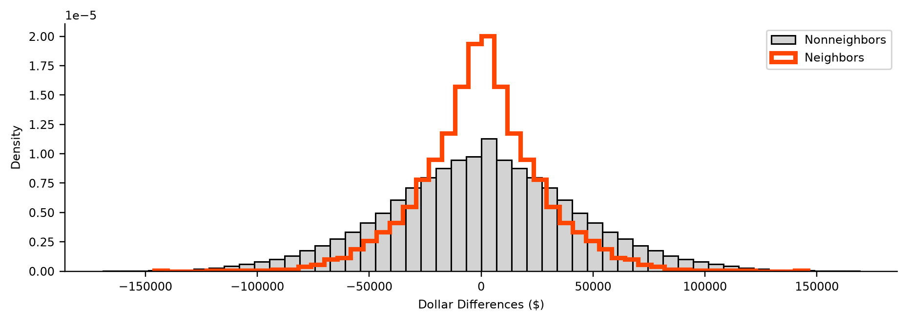
Non-neighbouring tracts are more dispersed → neighbouring tracts have smaller differences in wealth.
A first glimpse of spatial autocorrelation
Neighbouring tracts have more small differences in wealth than non-neighbouring tracts.
This is consistent with spatial autocorrelation: the tendency for observations to be statistically more similar to nearby observations than to distant ones.
Use case: boundary detection
The most extreme observed differences
Since links are symmetric, we focus only on focal observations where the focal is higher — each has an equivalent negative back-link.
| focal | neighbor | weight | median_hh_income_focal | median_hh_income_neighbor | diff | |
|---|---|---|---|---|---|---|
| 2606 | 473 | 163 | 1.0 | 183929.0 | 37863.0 | 146066.0 |
| 2605 | 473 | 157 | 1.0 | 183929.0 | 64688.0 | 119241.0 |
| 1890 | 343 | 510 | 1.0 | 151797.0 | 38125.0 | 113672.0 |
| 2607 | 473 | 238 | 1.0 | 183929.0 | 74485.0 | 109444.0 |
| 51 | 8 | 89 | 1.0 | 169821.0 | 66563.0 | 103258.0 |
Observation \(473\) appears often on the focal side — it is quite distinct from its nearby polygons.
Use case: boundary detection
Are these differences significant? Map randomization
Shuffle income values across the map and recompute the diff column. Now diff represents differences between random incomes rather than observed neighbouring ones.
n_simulations = 250
simulated_diffs = numpy.empty((len(adjlist), n_simulations))
for i in range(n_simulations):
# Shuffle income values across locations
random_income = (
san_diego_tracts[["median_hh_income"]]
.sample(frac=1, replace=False)
.reset_index()
)
# Join income to adjacency
adjlist_random_income = adjlist.merge(
random_income, left_on="focal", right_index=True
).merge(
random_income,
left_on="neighbor",
right_index=True,
suffixes=("_focal", "_neighbor"),
)
# Store results from random draw
simulated_diffs[:, i] = (
adjlist_random_income["median_hh_income_focal"]
- adjlist_random_income["median_hh_income_neighbor"]
)Code
f = plt.figure(figsize=(10, 3))
plt.hist(
adjlist_income["diff"],
color="salmon",
bins=50,
density=True,
alpha=1,
linewidth=4,
)
[
plt.hist(
simulation,
histtype="step",
color="k",
alpha=0.02,
linewidth=1,
bins=50,
density=True,
)
for simulation in simulated_diffs.T
]
plt.hist(
adjlist_income["diff"],
histtype="step",
edgecolor="orangered",
bins=50,
density=True,
linewidth=2,
)
seaborn.despine()
plt.ylabel("Density")
plt.xlabel("Dollar Differences ($)")
plt.show()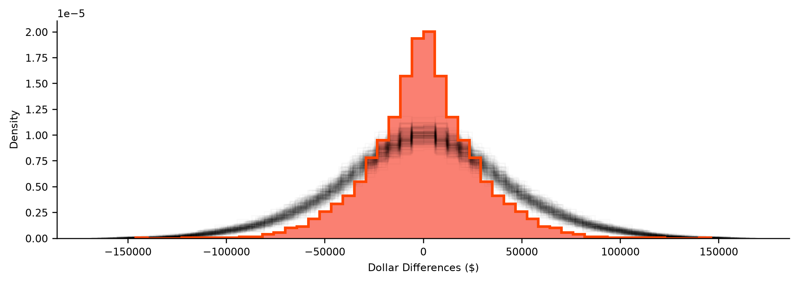
Observed differences (orange) against 250 randomly reshuffled maps (black).
Use case: boundary detection
Pooling the simulations into quantiles
# Convert all simulated differences into a single vector
pooled_diffs = simulated_diffs.flatten()
# Calculate the 0.5th, 50th and 99.5th percentiles
lower, median, upper = numpy.percentile(
pooled_diffs, q=(0.5, 50, 99.5)
)
# True if the value is "extreme"
outside = (adjlist_income["diff"] < lower) | (
adjlist_income["diff"] > upper
)
adjlist_income[outside]| focal | neighbor | weight | median_hh_income_focal | median_hh_income_neighbor | diff | |
|---|---|---|---|---|---|---|
| 888 | 157 | 473 | 1.0 | 64688.0 | 183929.0 | -119241.0 |
| 916 | 163 | 473 | 1.0 | 37863.0 | 183929.0 | -146066.0 |
| 2605 | 473 | 157 | 1.0 | 183929.0 | 64688.0 | 119241.0 |
| 2606 | 473 | 163 | 1.0 | 183929.0 | 37863.0 | 146066.0 |
Two boundaries fall in the top 1% most extreme differences in neighbouring household incomes.
Code
f, ax = plt.subplots(1, 3, figsize=(13, 4.5))
for i in range(2):
san_diego_tracts.plot("median_hh_income", ax=ax[i])
first_focus = san_diego_tracts.iloc[[473, 157]]
ax[0].plot(first_focus.centroid.x, first_focus.centroid.y, color="red")
west, east, south, north = first_focus.buffer(1000).total_bounds
ax[0].axis([west, south, east, north])
ax[0].set_axis_off()
second_focus = san_diego_tracts.iloc[[473, 163]]
ax[1].plot(
second_focus.centroid.x, second_focus.centroid.y, color="red"
)
ax[1].axis([west, south, east, north])
ax[1].set_axis_off()
san_diego_tracts.plot(
facecolor="k", edgecolor="w", linewidth=0.5, alpha=0.5, ax=ax[2]
)
contextily.add_basemap(ax[2], crs=san_diego_tracts.crs)
area_of_focus = (
pandas.concat((first_focus, second_focus)).buffer(12000).total_bounds
)
ax[2].plot(first_focus.centroid.x, first_focus.centroid.y, color="red")
ax[2].plot(
second_focus.centroid.x, second_focus.centroid.y, color="red"
)
west, east, south, north = area_of_focus
ax[2].axis([west, south, east, north])
ax[2].set_axis_off()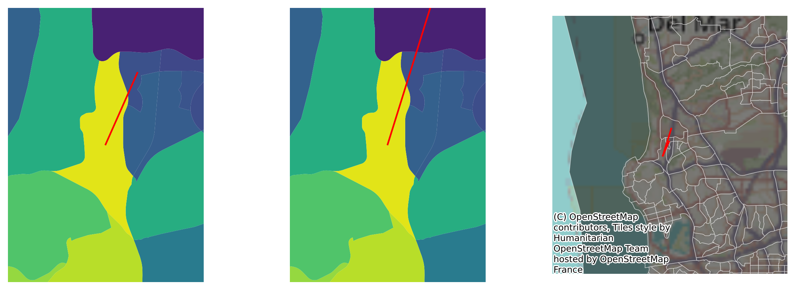
Observation \(473\) appears in both boundaries → likely an outlier, extremely unlike all of its neighbours.
Spatial weights - conclusion
Take-aways
Spatial weights are central to how we represent spatial relationships in mathematical and computational environments.
- at their core they are a “geo-graph” - a network defined by geographical relationships between observations
- they form a kind of spatial index, recording which observations have a specific geographical relationship
- they are fundamental to geographic data science: exploratory statistics, regionalization, spatial regression all build on them
Exercises
Data structures
explode()convertsMulti-type geometries into individual geometries. Using it, how many islands are in Indonesia?- Using
osmnx, extract the street graph for your hometown. networkxhas manyto_methods for non-geographical graph representations. How many are currently supported?- Using
networkx.to_edgelist(), what “extra” information doesosmnxinclude when building the edges dataframe? - Instead of average elevation per San Diego neighbourhood, find:
- the neighbourhood(s) with the highest average elevation
- the neighbourhood(s) with the highest single point
- the neighbourhood(s) with the largest elevation change
Exercises
Spatial weights
- Using the Rook and Queen matrices for San Diego and
Wsets.w_difference, are there any Bishop-contiguous observations? - Comparing the
cardinalitiesof Queen, Block, and Queen ∪ Block: which has the highest average cardinality? Which has more non-zero entries? Why? - Using
w.n_components: how many components does the Queen graph for San Diego have? With KNN and \(k=1\)? Increase \(k\) untiln_componentsis 1 and plot the relationship. - Which graph in this chapter has the most sparse structure?
- Compare
lat2WandhexLat2Wfor lattices of size (3,3), (6,6), (9,9). Which has higher average cardinality? Higher variation? Why is there norook=Trueoption inhexLat2W?
Exercises
Going further
- Build the Voronoi diagram for the centroids of Mexican states with
libpysal.cg.voronoi_frames, then theweights.Voronoiweights. Compare their connections with the Queen weights, visually and withweights.set_operations. - Interoperability: convert the Mexico Queen+Block weights to a
networkxgraph withw.to_networkx()and compute eigenvector centrality. Usingw.sparse, compute connected components and all-pairs shortest paths withscipy.sparse.csgraph. - In-degree vs. out-degree in a KNN graph: build
knn_6, verify \(k=6\) with a row sum overknn_6.sparse, then compute in-degree with a column sum. How evenly distributed is “hubbiness”? Does it reduce at \(k=26\)?